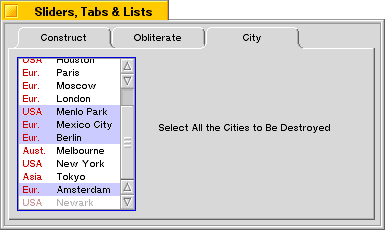

| The Interface Kit Table of Contents | The Interface Kit Index |
Although much of the time all you need to draw in a list are strings (in which case you can use the BStringItem class), from time-to-time you may need to display more than a simple text string—maybe you need to display multiple pieces of information per item, or maybe you just want to jazz up the display with some icons.
For example, let's say you need to let the user select a city from a list, but also need to display the part of the world that each city is in. You could just use BStringItem objects with strings like "Chicago (USA)", but it might look nicer if you could lay out your list items in two colums, maybe with a splash of color:

To change the appearance of a list item, you override the DrawItem() function to draw the item's contents however you want it to look.
The following sections define the class that creates these list items.
The declaration for our "CityItem" class looks like this:
#include <String.h>
#include <ListItem.h>
class CityItem : public BListItem
{
public:
CityItem(const char *city, int32 region = 0);
virtual void DrawItem(BView *owner,
BRect frame,
bool complete = false);
enum { USA, ASIA, EUROPE, AUSTRALIA, OTHER };
private:
BString kCity;
int32 kRegion;
};
const char *region_names[] = {
"USA", "Asia", "Eur.", "Aust.", "Other"
};
A CityItem object contains two pieces of data: a city name, and a region code. The region code is used as an index into the array of region names.
The constructor looks like this:
CityItem::CityItem(const char *city, int32 region)
: BListItem()
{
kCity = city;
kRegion = region;
}
The DrawItem() function does the actual work of drawing the item. DrawItem() receives three parameters:
owner->DrawString(item_text);
DrawItem() begins by checking to see if the item is selected (by calling IsSelected()) or if a complete redraw is required. In either of these cases, we want to redraw the background, to either the highlight color, or the owner's view color:
void CityItem::DrawItem(BView *owner, BRect frame, bool complete)
{
if (IsSelected() || complete) {
rgb_color color;
if (IsSelected()) {
color = kHighlight;
}
else {
color = owner->ViewColor();
}
owner->SetHighColor(color);
owner->FillRect(frame);
}
Now we draw the text. First, we move the owner view's pen so it's inset from the bottom left corner of the item's frame. (In a real application, you would want to make the inset adjustments based on the font that's being used; see the BFont class for more information.):
owner->MovePenTo(frame.left+4, frame.bottom-2);
If the item is enabled (selectable), we set the owner view's high color to a shade of medium red; if it's disabled, we use a lighter red color (the color definitions aren't shown). Then we use DrawString() to draw the region name:.
if (IsEnabled()) {
owner->SetHighColor(kRedColor);
}
else {
owner->SetHighColor(kDimRedColor);
}
owner->DrawString(region_names[kRegion]);
Move the pen to the right column and draw the city name:
owner->MovePenTo(frame.left+38, frame.bottom-2);
if (IsEnabled()) {
owner->SetHighColor(kBlackColor);
}
else {
owner->SetHighColor(kMedGray);
}
owner->DrawString(kCity.String());
}
To use a CityItem object, simply construct a new object and pass it to BListView::AddItem():
listView->AddItem(new CityItem("Chicago", CityItem::USA));
| The Interface Kit Table of Contents | The Interface Kit Index |
Copyright © 2000 Be, Inc. All rights reserved..